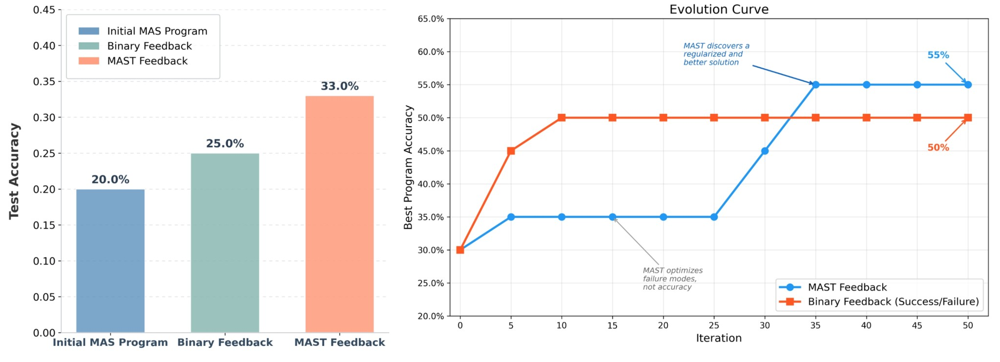
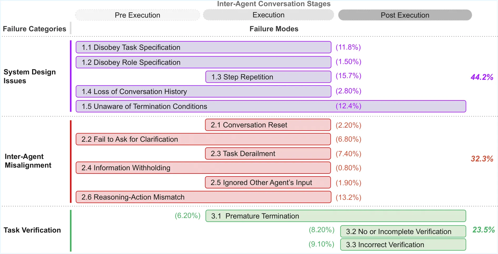

Research blog
Blogs
 July 2026 · New paper release! Our follow-up to MAST
AdaMAST: A Framework for Building Adaptive Failure Taxonomies to Improve LLM Agents
AdaMAST gives an agent system a memory of its own failures: a
compact, validated taxonomy of named failure codes induced from
its traces, reused by search, runtime monitoring, and trajectory
selection.
July 2026 · New paper release! Our follow-up to MAST
AdaMAST: A Framework for Building Adaptive Failure Taxonomies to Improve LLM Agents
AdaMAST gives an agent system a memory of its own failures: a
compact, validated taxonomy of named failure codes induced from
its traces, reused by search, runtime monitoring, and trajectory
selection.

February 2026 · ADRS series Automating Algorithm Discovery: Improving Multi-Agent Reasoning Systems using MAST (Part 2) The evaluator is the bottleneck: with MAST-based feedback instead of binary reward, evolutionary search finds higher-performing multi-agent reasoning systems on Olympiad-level math. December 2025 · with IBM Research
Why Do Enterprise Agents Fail? Insights from IT-Bench using MAST
310 SRE traces, three models, one lesson: success rates hide the
failure signature. MAST separates fatal failures from benign
friction and turns IT-Bench scores into an engineering roadmap.
December 2025 · with IBM Research
Why Do Enterprise Agents Fail? Insights from IT-Bench using MAST
310 SRE traces, three models, one lesson: success rates hide the
failure signature. MAST separates fatal failures from benign
friction and turns IT-Bench scores into an engineering roadmap.

December 2025 · ADRS series Automating Algorithm Discovery: Improving Multi-Agent System Design using MAST Replacing hand-tuning with OpenEvolve: MAST failure modes as the fine-grained signal that lets evolution mutate a multi-agent architecture toward a 7x better failure rate. November 2025 · Tutorial
How to Use MAST to Improve Your Agents
A step-by-step tutorial: annotate a LangGraph agent's traces with
the MAST Annotator, read the failure-mode histogram, and rewire
the system for a 53% relative gain — same LLM.
November 2025 · Tutorial
How to Use MAST to Improve Your Agents
A step-by-step tutorial: annotate a LangGraph agent's traces with
the MAST Annotator, read the failure-mode histogram, and rewire
the system for a 53% relative gain — same LLM.